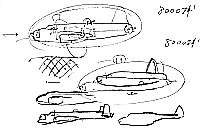

画 鈴木プロデューサー
97.2.1（土）
鈴木プロデューサーから会議用資料の最終リテークが出る。最終的に修正が完了し、コピーを始めたのが夜の10時すぎ。今回は表紙や内部にカラー満載の豪華版である。会議ごとにエスカレートする資料に「次回はどうなるのか」と関係者が心配の声。
保田さんとスタジオキリーに「なんとか最後まで付き合って」とお願いに行く。
97.2.2（日）
今日からみんな日曜出勤。だいたいみんな昼前の出社となる。
宮崎監督が所沢の秋津から歩いて出勤。理由は「日曜日に出勤すると散歩の時間が取れないから」。ちなみに距離は13キロ、所要時間は２時間半。
動画チェックが完全に動画に追いつき、中込さんが手空き状態。いかん。
Ｉ氏の初原画アップ。
野崎さんが外出先の近くで見付けたコージーコーナーでワッフル等の差し入れを買ってくる。
野中氏が公団住宅のモデルハウスの見学に行き、ついに念願の引っ越しの決意を固める。抽選にあたればの話だけど。
宮崎監督が昼食にチキンラーメンを作った途端に、奥井さんからＣＧ合成のチェックの依頼。終わってみればチキンラーメンのつゆが無し。それでも全部食べたるところはさすが。
安藤氏が、宮崎監督のラフを元にポスター第二弾の原画を描き上げる。
97.2.3（月）
宮崎監督は、昨日のムリがたたったのか、足の筋肉痛で仕事の能率が落ちている。
背景の手伝いとして谷口氏が来社。山本さんのシーンのレイアウトをとりあえず10CUTほど渡す。最終的に20CUTほど手伝ってもらう予定。
男鹿さん来社。ディダラボッチによって、○が○○○○○○シーンのテスト撮影用の背景を持参。
最近、演助の石曽根氏と共にすっかり香港映画にはまっているが、新人のフランス人デイビット君がもっと凄い香港映画マニアらしい。日本ではなかなか手に入らない「チャイニーズオデッセイ 西遊記」のサントラ盤まで手に入れているのだ。
97.2.4（火）
久石譲氏来社。宮崎監督と音楽打ち合わせを行う。
１月中旬に行われた健康診断の結果が出る。さっそく問題のあったスタッフ向けに保健医の面接が行われる。何時もパンしか食わない野崎氏は、貧血と栄養失調の疑いで、要精密検査と通告される。やはり日本人は米を食べなきゃ。ところで私の健康診断はオールＡだったのだが、宮崎監督から「この時期に制作がオールＡという事は、いかに仕事をしていないかの証明だ」と言われている。
昨年10月末より制作業務部に、某会社のスパイとして出向してきている米沢さんの似顔絵を鈴木プロデューサーが描く。今まで幾人かの似顔絵を描いてきた鈴木プロデューサーだが、私のものを含めて悪意のこもったものが多かった。しかし今回の似顔絵は、米沢さんの真実に近い姿が描かれていて好感が持てる。これには人の絵をめったに褒めない宮崎監督も「特徴をよくとらえている」と絶賛。本人は「…」。
制作部の居村君が、インフルエンザとおぼしき症状で早退。
97.2.5（水）
居村君は予想通りインフルエンザでお休み。
制作の男鹿さんへの連絡ミスで、保田さんが色指定に使いたいと言っていたボードを、宮崎監督のＯＫが出た後、保田さんに見せずに、描いた男鹿さんが持って帰ってしまった。現在１枚でも多く仕上げスタジオに出さなければならない状況なだけに、当たり前のようだけど怒られる。急遽男鹿さんの仕事場に出向き回収。
宮崎監督の危惧もあり、３月10日すぎに行われる予定のＣパートのカッティングに向けて、原画でスケジュール的にきびしい二木さんと山田氏の為に、残り日数でのCUT毎進行表を作成する。
若林さん、効果の伊藤さんが来社し、ＡＢＣ1パートの効果音を宮崎監督とCUT順に打ち合わせ。
97.2.6（木）
ポスター第二弾のセルが上がってくる。宮崎監督が背景と合わせてレイアウトの微調整。
各原画マンの残りCUT数から、スケジュール内に終わらせることが困難な何人かをピックアップし、会議室で個人面談。約２名、計10数CUTが間に合いそうもないことが発覚する。いろいろ手を打たなきゃ。
鈴木プロデューサーは昨日から「もののけ姫」の宣伝で福岡、名古屋に出張中の為、社内がみょーに静かである（地声がとてもでかいのだ）。
97.2.7（金）
ＩＭスタジオへ、アップに向けて最後のお願いに行く。差し入れに銅鑼焼きを持って行ったら、お茶菓子に別な銅鑼焼きが出てきてしまった。きっとおやつに銅鑼焼きを買ったばかりだったに違いない。別なお菓子にすれば良かったかと悔やむ。
線撮り用に、コピー機で使える透明なフィルムを購入することに。価格も今まで使っていたセル並みである。これで線撮り作業の手間が少しは減るか。
杉野左秩子さんが原画作業に入る準備に来社。机が一杯なため、宮崎監督のお昼寝部屋でとりあえず作業をすることになる。すぐ打ち合わせをしたいところであったが、監督のレイアウトが出来ていないため、来週の火曜日に作打ちを行う予定。
野中さんが公団の申し込みをしたと聞いた宮崎監督、さっそく間取りを聞くなり、日があまりあたらないことを指摘。「日があたらないところに住むと、一生結婚できない」と野中さんをいじめている。
ジブリ作品資料集の第五巻編集のため、今日も栄養の足りない野崎氏がパンをかじりながら「原口さん原稿早く書いてくれー」と呪いの言葉を吐きつつジブリに泊まり込んでいる。
97.2.8（土）
通常のラッシュと○○したデイダラボッチのテストラッシュが行われる。テストラッシュはＯＫが出ず、完全にだめなパターンは排除しつつもう一度やり直し。
浦谷さんが取材に来社。
宮崎監督が米沢さんの似顔絵に手を加え、アザラシのようにしてしまった。鈴木プロデューサーはさっそくグッズ化を検討するも商品部今井氏は冗談としか受け取らず。野中さんをモデルにした「野中君」の商品化に失敗した実績があるだけに、今回もだめだろうというのが制作部の一致した意見である。初めは嫌がっていたモデルの米沢さんは「人間ばなれしてしまったのでもう僕だとわからんでしょう」と静観を決め込んでいる。

今週もかなりのペースで原画が上がってきたが、1CUTあたりの平均枚数が112枚と、先週あたりから今までの1.6倍になっている。このまま行くと総枚数が…あ～考えたくない！
97.2.9（日）
宮崎監督は今日も徒歩で出社。散髪してから来たので3時半ころになる。しかし休み無しで毎日夜中まで働き、日曜日は所沢から徒歩で出社とは。「俺はもうへろへろだ」と言いながらなんであんなに元気なの？
97.2.10（月）
近藤喜文氏、社内に串団子を差し入れ。
今まではイマジカのラボ便を全て夜便（夜９～10時頃）にしてきたが、奥井さんから、「もののけ姫」の後半は夜便が来る時間に撮影が終わらないこともありえるので朝便にしたい」と相談がある。こちらに異存無し。
オムニバスの若林さんからＡＢＣ1パートのアフレコスケジュールが送られてくる。忙しい人が多く、なかなかみんな一度にという訳にはいかない。
97.2.11（火）
宮崎監督は朝から鍼へ直行。
居村君がホームページの掲載を目指し、鈴木プロデューサーの似顔絵を描いて見せるが、鈴木プロデューサーから「こんなんじゃだめだ。描くなら真剣勝負で描け！」と一喝される。
杉野さんが今日から社内で作業開始。打ち合わせ。CUT1,661～1,669まで９CUT。
原画の田中敦子氏、今日で作業が終了し、テレコムへ帰還。
97.2.12（水）
Dパート後半に再び登場するタタリヘビの作業が致命的に遅れている。まだ動画に入っていないCUTが23。そのうち原画すら上がっていないCUTが19もあるのだ。量と質の板挟みにどう対処すれば良いのか。難しい。
鈴木プロデューサーが電子メールにはまっている。というよりもメールが来すぎるので、こまっていると言うべきか。
美術の田中氏とスケジュールの確認をするも、危機的状況を確認し合っただけ。もう一度詳細にデータの洗い直し。
宮崎監督の推薦する「ブラッカムの爆撃機」（ロバート・ウェストール著 福武書店）を出版部の柳沢さんが読んでひどく感銘を受けたそうだが、それを聞いた宮崎監督は、紙に爆撃機の絵を描きながら「ここの銃座が…」と早速柳沢女史に講義をはじめた。しかしメカにはてんで弱い柳沢さんは聞いてるフリ。

97.2.13（木）
先週に引き続き再びどろどろデイダラボッチのテストラッシュ。再びＯＫが出ず。さらに素材を厳選し再度テスト。
野崎氏が宮崎監督のラフをもとに「ツール・ド・信州」のユニフォームをマックでデザイン。その後モニターを見ながら宮崎監督が更に手直し。いよいよ発注か。
月曜日より野中さんの部下が新しく入ってくるのだが、ただでさえ狭い制作部にどう机を入れたらいいのか、米沢さんと野中さんが、紙で作ったミニチュアを使って思案中。
97.2.14（金）
このままではとても動画が上がりそうもないので、とりあえず一人どの程度のペースで上げて行けば終わるのかを知らせる貼紙を作る。
最近、人生に疲れた者達のたまり場になっていたキャラクター商品部に宮崎監督が「もうちょっと部屋を片づけろ！」と急襲。あわてて漫画の本などを捨て たものの、浅野君が隠していた車の本を見付けられ「これは仕事上必要なもの…」と必死に言い訳するも通じず。
スパイの米沢さんが毎日夕食を一旦自宅に帰ってとっている。しかも会社まで奥さんが車で迎えに来てくれるらしい。なんてうらやましい…。と書いていたら、「実は今は自転車で帰っています」と米沢さんから訂正あり。安くて狭い駐車場に移ったら、奥さんが車の出し入れができず中止になったとのこと。しかも自宅に帰って食事をしているのは、前の会社では給料から食費が天引きされていたのに、今は奥さんからもらっている小遣いが以前と変わっていないのに、自分の小遣いから食費を出さねばならず、単に金が無いためだ、とのこと。
97.2.15（土）
ラッシュが行われる。
外で手伝ってくれているＡ氏が２CUT原画を上げるも、次の宮崎監督のレイアウトが間に合わず、少しお休み。
今日は朝から制作の田中さんが、具合が悪くて唸っていた。西桐さんの運転で病院に行き、戻ってきたと思ったらそのまますぐ帰ってしまった。病名を聞き忘れてしまったが、風邪と過労のためだろうか。宮崎監督と鈴木プロデューサーは、「絶対食べ過ぎだ」と言っていたが、昨日の夕食に同じ物を食べた私としては、食あたりでないことは断言できる。
月曜日から野中さんの元で働くという望月さんのために、業務部の机を増やさねばならない。机一つ分のスペースをあけるのも容易ではないこの業務部の部屋を見て、鈴木プロデューサーは「この際だから田中をごみ箱に捨てちゃおう。」と返答に困ることを言っている。一番荷物の多い田中さんと野崎さん（野崎さんは朝から沼津で出張校正）はいない。結局、午前中かかってなんとか机一つ分のスペースをあけるが、その間野崎さんと田中さんの机の下から埃にまみれた靴が多数発見された。何故こんなに靴があるんだろう?数えてみたら合計8足。野崎さんの机の上は動かしたことで雪崩をおこしているし、月曜日かたづけるのが大変そう。
97.2.16（日）
今日は雨のため宮崎監督も車で出社。
「エヴァンゲリオン劇場版２部構成に」という新聞記事を見て、監督本人を知っているだけに「苦しんでるだろうな」と宮崎監督も心配気味。
演助の一人が何食わぬ顔で５時出社。監督が来てるのに演助が大名出勤かい。
外で手伝ってもらっている原画マンが次々と原画を上げてくるので、レイアウト作業が追いつかず宮崎監督が苦しんでいる。
先週も40CUT近く上がり、監督の棚に山積みとなった原画を見て、宮崎監督は「なんで最初から上げないんだ」とやけ気味に一言。
外でムリにお願いしているＡ氏がCUTを順調に上げているため「さらに追加できないか」と宮崎監督から要望あり。Ａ氏に打診するも「今週末に返事をします」とのこと。
97.2.17（月）
今日から野中さんの部下として望月さんが出社。
田中さん完全復活か、と思いきやまだまだ本調子じゃないらしい。柳沢さんからドーナツをもらって食べてみるものの、「気持ちわるくなった」と言って柳沢さんに怒られていた。
手持ちが終わりそうにない原画桑名氏に、粟田、遠藤両氏を手伝いに入れると宮崎監督から話しあり。
午後１時よりワンダーステーションにて、ＡＢＣ1パートの森 光○さんと彼女に絡む部分のみの松田○治氏のアフレコあり。
ヒイ様役の森さんが第一声を発した途端「この声だ！」と興奮する宮崎監督。アフレコは「ジェシカおばさん」以外にあまり経験の無かった森さんでしたが、最初にぎこちなさが見られた程度で、数回当てるうちにぴったりと収まってきたのはさすがでありました。最後の台詞「すこやかであれ」には宮崎監督も「この台詞だけでやってもらったかいがあった」と大絶賛。実は森さんは、この話が来るまで宮崎監督の事を知らず、作品も見たことがなかったそうなのです。しかし、「となりのトトロ」のビデオを見て涙が出るほど感激し、「この映画知ってる？」と周りの人に声をかけまくったらしいのです。ところがみんな既に見ていて、がっくりとしたそうですが、逆に「他にもこんな作品があるよ」と紹介され、ただいま宮崎アニメの勉強中とか。
一方松田○治氏もアシタカにぴったりの声でまったく文句の付けようが無し。因みに松田氏はこの2月の14日に子供が生まれてパパになったのです。収録の合間にデジカメで撮った子供の写真をみんなに見せびらかしていました。
夕方森友さんが巨大な鍋いっぱいの粕汁（鮭が入っていたので三平汁か）を作りスタッフに配る。
アフレコの最終スケジュールが若林さんから送られてくる。鈴木プロデューサーも基本的にＯＫを出す。
97.2.18（火）
オムニバスからCUT87の差し替えの為、カッティング済みのラッシュを回収。
やはりタタリ神が問題になってきた。社内じゃ手が遅くて間に合いそうもないので外注に出そうとしたら、「とても期日までにできない」と断られるケースが出てきた。仕方がないので、いくつかスタジオをあたって動画を探してみるも、そもそも動画を海外に頼ってきたため、国内にあまり動画の人がいない状況なのである。いてもうまい人はすぐ原画になってしまうし…。いまさら言ってもしょうがないか。とにかく大ピンチ。
「ツール・ド・信州」のユニフォームのデザインがまだ決まらない。宮崎監督の修正が何度も入っているためである。たしかに野崎さんが最初にデザインしたものより、かなりかっこよく仕上がってきている。しかし色数はどんどん増えているし、本当に作るとなったら一体幾らかかるのか。因みに私は貧乏である。
97.2.19（水）
瀬山編集にて、CUT87のほか、リテークも含めて約20CUTを差し替えかえる。テレシネした後、オムニバスへ返却。
「ブラッカムの爆撃機」を読む。こんな傑作がなぜ日本で話題にならなかったのか不思議である。児童書で出ていたからか？
杉野さんが所属するディズニージャパンの動画マンが見学に来る。
97.2.20（木）
三原さん手持ち終了。大谷さんとIさんの分からCUT1,630、1,632、1,637、Ｅ7、8、9の6CUTを引き取り打ち合わせ。
動画が出せずに問題になっていた芳尾タタリと遠藤タタリの400枚タタリのコンビは、芳尾タタリが社内の田村君に、遠藤タタリが外注の矢地さんに担当が決まる。
タタリCUTの説明を受けに矢地さんが来社する。説明のついでに社内見学と、でき上がった部分のラッシュを見てもらう。
稲村氏が手持ち終了。桑名君の手持ちから、1,425、1,427、1,430～1,432の5CUT分を引き上げ打ち合わせ。
男鹿さんから「Ｄ2パートのＣＧ部分の基になる背景にそろそろ取りかかりたいので、原図をよろしく」とTELがある。担当は宮崎監督。描かなければならないレイアウトが山積みになっているも、原画チェックも山積みになっている為、思うように進まず。
97.2.21（金）
田町のＭＩＴスタジオでＡＢＣ1パートのアフレコが行われる。このスタジオは本来音楽録音用に使われているスタジオだが、若林さんの、今までのアニメーションの音とは違うものにしたい、との意向から選ばれたもの。ちょうど改装が終わったばかりでピカピカのスタジオであった。スケジュールの都合がなかなかつかず、エボシ、ジコ坊、甲六等は別どりとなったが、アシタカ役の松○洋治さん、サン役の石○ゆり子さん、トキ役の島○須美さん等が一堂に。
冒頭のタタリ神を演じたのは「独立愚連隊」シリーズや「戦国野郎」等岡本喜八映画で数々の怪演を残している佐○允さん。もともと別な役柄だったのを本人のたっての希望でタタリ神役に変更したというだけあって、タタリ神の台詞は勿論、唸り声から本来ＳＥで採るべき音まで声で表現してしまう熱演を披露。いやー感動もんです。
このタタリ神の録音には、普通のマイクの他にも直接佐○氏の首に張り付けて音を採る特殊マイクが使われていた。
日曜祭日もなく元気に（！）働いている宮崎監督ですが、さすがに所沢から10時に田町へ来るのが相当しんどかったのか、朝から2,000円のユンケルを飲んで「これで２時間半は持つ」とアフレコに取りかかっていた。
兄妹そろっての宮崎アニメファンの石○ゆり子さん。収録が終わっても「見学させてください」とスタジオの隅で見ていた。そこへ鈴木プロデューサーから「ここに座りなよ」と呼ばれ、宮崎監督の後ろの椅子へ。その長椅子に座っていたジブリのスタッフ達のうち、川端、稲城はあわてて立ち上がったが、某制作はこんなチャンスを逃すはずもなく、スッと横にずれ、まんまと彼女を横に座らせた。しかしいざ横に座られるとあまりの緊張に硬直状態となってしまい身動き一つ取れず。あーなさけない。
ゴンザ役の上○恒彦氏は、宮崎監督の「まさにぴったり」の言葉通り、違和感もまったく無く、登場部分がけっこうあるにもかかわらず、予定よりはやくたった１時間で収録を終えてしまった。
遠藤氏、手持ち終了。追加打ち合わせ1,601～1,610まで10CUT。
97.2.22（土）
野中さんが公団の抽選に洩れ、広いマンションでの新生活が夢と消える。因みに公社に住んでいる片塰氏は「僕は20回目の応募で入れたんだから」と慰めている。
原画の遠藤さんが、毎日夜中の4時前に自宅マンションからヘールボップ彗星を観察しているらしい。遅刻の原因はそれか。
川端氏がアフレコスタジオの帰りに乗ったタクシーで「よみがえる視力」なる、近眼を手術によって治す眼科のパンフレットを入手。日頃「もう目が見えない」と叫び続けている宮崎監督に渡す。「田中、先に手術しろ！」と人に言いつつも「老後はいろんなものをはっきり見て暮らしたいじゃないか」と案外本気かも。
16時よりＭＩＴでアフレコが行われる。
97.2.23（日）
今日は月に一度の床掃除の日であったが、スタッフが出勤するため清掃会社に無理やり朝７時に来てもらって掃除してもらう。迷惑かけてます。
先週もCUTが40CUT以上上がったため、宮崎監督は自分の棚に山積みとなったCUTを見ながら、またしても「なぜ去年のうちにもっと上げなかったんだ」と怒り狂っている。
97.2.24（月）
大塚さん手持ち終了。速い。原画の手伝いに入る案もあったが、原画上がりの直しをすることに。
宮崎監督が、昨日の淵の森での下草狩りの後遺症で下半身がへろへろになっている。
Ｄパート後半の動画が既に保田さんのもとに流れていっているが、背景作業が遅れているため、色指定作業が困難を極めている。無い背景から色を採る神業。
97.2.25（火）
デイダラボッチとタタリ神のテストラッシュが行われる。
マスク等により、動画チェック上がりより仕上げ入れの枚数が増えつつある。ここ10日位でチェック上がり分より500枚程増加している。
先日、公団の抽選に外れた野中氏だが、実は補欠であることが判明、消えかけた希望の炎が再点灯。しかし、聞くところによると、住民票とか給与証明等必要書類を全て提出しなければ、補欠の対象にすらならないそうだ。もうちょっと簡潔にできないものか。
97.2.26（水）
男鹿さんが背景を16CUT持って来社するも、宮崎監督が渡すと約束していたレイアウトが間に合わず。山積みとなった原画上がりに、催促されるレイアウト。おまけに音楽や音の打ち合わせとアフレコまで重なり、完全にオーバーワーク。
風邪で２日程休んでいた片塰氏が今日から復帰。しかし追い込まれてきたＣＧ作業はますますピンチ。
風邪の次ぎには花粉症が作業の邪魔をし始めている。恐るべき自然の猛威。
97.2.27（木）
野崎さんが契約切れで退社するため、宮崎監督が色紙を描く。
なんと突然サン役の石○ゆり子さんが来社（鈴木プロデューサーは当然知ってたみたいだけど）。社内を見学してまわったが、当然あちこちの部署でスタッフが騒然となる。動画チェックの斎藤君は早速動画用紙にサインをもらっていた。その後鈴木プロデューサーが打ち合わせを兼ねて、石○さんと食事に行ったが、「なぜ私を誘ってくれなかった」と怒り狂うスタッフ多数。
ディダラボッチのテストラッシュを行う。まだＯＫが出ず。再びテスト。
デジタルCUTの35mmテストラッシュが行われる。煙の色について１CUTリテーク。
またまたテストラッシュ。今度はデジタルカメラのテスト。
昨日「もののけ姫」の世界公開に向けて、ディズニーの人が来社し、打ち合わせが行われたが、なんでもアメリカでこの制作日誌を完全に翻訳してホームページに流している人がいると聞いた。それを聞いた米沢さんは「僕のことをスパイの米沢と書いてますけどアメリカに入国できなくなるんじゃ…」と心配している。
97.2.28（金）
新しく制作業務に入った望月さんが相当な歴史おたくらしい。野崎さんの後釜か。それを聞いた一村教授が早速その知識量を計るため探りを入れていた。
予定より早く山森氏の手持ち原画が終了する。終わりそうもない原画マンから数CUT廻す予定だったが、どれにするかまだ決めていなかった為、アフレコに行っている監督に連絡をとり、１CUT分を山森氏に廻し電話で作画打ち合わせを行う。
ＭＩＴスタジオで小○薫氏のアフレコ抜き録り。その後田○○子氏のリハーサルあり。順調。
野崎氏が今日で退社するため、６時すぎから制作部を中心とした送別会を行う。プレゼントはハンカチと養命酒。以前は「編集の仕事は辞めて北海道に帰り、牧場をやる」と断言していた野崎氏だが、サンライズやバンダイの仕事が忙しくて当分は無理らしい。夏休みに遊びに行ける別荘ができると楽しみにしていた近藤喜文氏は、野崎氏に「ジブリのために牧場を」とカラーで描いた色紙を渡していた。
| 次のページへ |
| 日誌索引へ戻る |
| 「もののけ姫」トップページへ戻る |